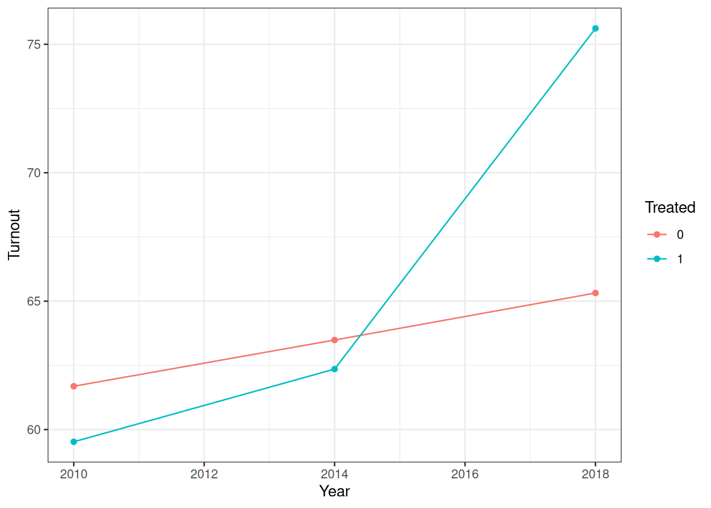

set.seed(123)
# Parameters
regions <- LETTERS[1:20] # 20 regions
years <- c(2010, 2014, 2018)
# Create panel structure
data <- expand.grid(Region = regions, Year = years)
# Treatment assignment (half treated)
treated_regions <- regions[1:10]
data$Treated <- ifelse(data$Region %in% treated_regions, 1, 0)
# Post indicator
data$Post <- ifelse(data$Year == 2018, 1, 0)
# Time trend (common to all regions → ensures parallel trends pre-treatment)
data$TimeTrend <- ifelse(data$Year == 2010, 0,
ifelse(data$Year == 2014, 2, 5))
# Region fixed effects (baseline differences)
region_fe <- rnorm(length(regions), mean = 60, sd = 5)
names(region_fe) <- regions
data$RegionFE <- region_fe[data$Region]
# Treatment effect (only applies in post period for treated units)
treatment_effect <- 10
data$TreatmentEffect <- data$Treated * data$Post * treatment_effect
# Random noise
data$epsilon <- rnorm(nrow(data), mean = 0, sd = 2)
# Outcome variable: turnout
data$Turnout <- data$RegionFE +
data$TimeTrend +
data$TreatmentEffect +
data$epsilon
# Keep relevant columns
data <- data[, c("Region", "Year", "Treated", "Post", "Turnout")]Session 4 - Difference in Differences
Introduction
During this session, you will start using causal inference, specifically, the difference-in-differences method. The session is organised as follows, first a few words about panel data. Then, some theoretical reminders of difference-in-differences will be presented before learning to code the analysis and finally, we will discuss parallel trend assumptions.
Panel data
Panel data are a specific kind of dataset. It is a dataset where you collect information at different points in time t for the same individuals i. So, panel data are repeated observations of individual throughout a certain period of time. What is particular about panel data compared to other datasets is that the observations are not all independent from each other. Indeed, observations at different times of a same individual are probably correlated due to time-invariant characteristics of the individual. This lack of independence of observations does violate one of the OLS regression assumptions, meaning that your estimated coefficients could be biased. There is a way to take into account this dependence into your model to have a valid estimation of your predictors. You can introduce individual fixed effects in your model. This means that you add into your control variable the variable that tells you to which individual comes the observation. This will control for unobserved and time-invariant characteristics of the individuals that could explain variation in your outcome variable. If you do not want to add individual fixed effects because it controls for too much of your variation, you could also cluster your standard errors at the individual level.
Difference-in-Differences: reminders
In the previous sessions, different regression analyses were seen (OLS, logistic, multinomial). Difference-in-Differences is based on OLS regression. The main difference is that the design of diff-in-diff is made to be able to study causal relationships between variables. While previously, with OLS regression, we studied how an independent variable can influence a dependent variable in diff-in-diff, we are going further by saying an independent variable (usually called treatment) causes the change in the dependent variable.
How can difference-in-differences infer causality? It is done by comparing two groups: one treatment group and one control group. You are probably wondering, if we have treatment and control groups, why can’t we directly look at the difference in means? The reason is that when you use difference-in-differences, you have observational data and not experimental data. This means that the treatment is not randomly given across your sample. There could be other factors explaining why an individual receives the treatment and not another, meaning that there is no guarantee that the treatment and control groups are similar before the treatment, making it wrong to directly compare the difference in means between the two groups.
The difference-in-differences technique is able to compare the two groups even if they are not perfectly similar before administering the treatment. The diff-in-diff technique does not look at the effect of the treatment in terms of levels but in terms of change. The idea is to find a control group that has a similar trend to the treatment group before the treatment in terms of the outcome (this is the parallel trend assumption discussed below). Once you have control and treatment groups that behave similarly before the treatment (even if they do not have the same values on the outcome), you can estimate the effect of the treatment by looking at within change of each group across time and then at the difference between the within change of each group. In other words, difference-in-differences looks at the difference pre-post treatment in each group and then looks at the difference between treated and non-treated groups.
| Treatment | Control | |
|---|---|---|
| Pre-treatment | A | C |
| Post-treatment | B | D |
So, the within difference is:
for treatment group: B-A
for control group: D-C
And the difference between treatment and control is: (B-A)-(D-C).
In more mathematical terms, the difference-in-differences analysis is a regression using time and treatment as independent variables and using a interaction between the two to compute the influence of the treatment on the outcome:
\[ Y= \beta_0+\beta_1 Treatment+ \beta_2 Time+ \beta_3 Treatment*Time +\epsilon \]
To compute a difference-in-differences analysis, you need to have panel data. You need to have data before the treatment and after the treatment for both groups. Difference-in-differences is also possible when you have more than one time period or more than two groups.
As you are using panel data, you need to think about the lack of independence of your observations. Depending on the number of groups and number of periods, you may need to cluster your standard errors. If you have individual-level treatment and only 2 periods (only two observations by individuals), you do not need to cluster your errors. If you have group-level treatment and more than two groups, you should cluster your standard errors at the group level. However, if you only have two groups, you should not cluster because in practice it is not possible to get valid inference with only two clusters. Furthermore, if you use observations from more than two time periods and more than two groups, it may be useful to add fixed effects to your model to control both a time trend and unobserved time-invariant characteristics of your groups.
Difference-in-Differences: application
In R
There are two possibilities, depending on the need to cluster the standard errors.
If you do not need to cluster, you can use the lm() function, where you simply need to specify an interaction effect (by adding \(*\) between your time and treatment variable):
lm(formula, data) :
fomula: Y ~ Time*Treatment (+controls)
data: name of the dataset
In lm() if you want to add time and group fixed effects, you simply need to add them to your formula. The only thing is that when you will compute your regression table, you will get the estimated fixed effect for each time period and group.
If you do need to cluster, the easiest way is to use the fixest package because in lm you cannot directly command the cluster SE. You should use the feols() function, it works very similarly to lm` but it has more options.
feols(formula|FE,cluster=~group,data):
fomula: Y ~ Time*Treatment (+controls)
FE: fixed effects (will not appear in your regression table)
cluster=~group: specify that you want clustered SE (if you do not add this argument, you will have IID SE like in lm)
data: name of the dataset
With feols function, the stargazer function does not work. You need to use etable().
Example with simulated data
To illustrate the theory, we will use a simulated dataset that can be created with the code below. Imagine you want to study the effect of a new electoral reform throughout a country. Before introducing the electoral reform, the government decided to test the reform in only some regions of the country. The government wants to know if it introduces mail-in voting, will increase voter turnout.
Now, we can compute the model. We only use observations from 2014 and 2018.
\[ Turnout = \beta_0 + \beta_1 Treated +\beta_2 Post + \beta_3 Treated*Post +\epsilon \]
reg1<-lm(Turnout~Post*Treated,data=data[data$Year==2014|data$Year==2018,])
summary(reg1)
Call:
lm(formula = Turnout ~ Post * Treated, data = data[data$Year ==
2014 | data$Year == 2018, ])
Residuals:
Min 1Q Median 3Q Max
-12.5918 -2.8209 -0.4634 3.5886 10.6684
Coefficients:
Estimate Std. Error t value Pr(>|t|)
(Intercept) 63.486 1.694 37.479 < 2e-16 ***
Post 1.831 2.396 0.764 0.44970
Treated -1.131 2.396 -0.472 0.63975
Post:Treated 11.433 3.388 3.375 0.00178 **
---
Signif. codes: 0 '***' 0.001 '**' 0.01 '*' 0.05 '.' 0.1 ' ' 1
Residual standard error: 5.357 on 36 degrees of freedom
Multiple R-squared: 0.5172, Adjusted R-squared: 0.477
F-statistic: 12.86 on 3 and 36 DF, p-value: 7.305e-06In this case, as we only are comparing only two time periods and only have two observations by region, we do not need to cluster the standard errors.
How to interpret the model ?
Post: this estimates the time trend (holding the other factors constant). In this case, the coefficient is not significant, meaning that we do not see a statistically significance difference in turnout due to time (between 2014 and 2018).
Treated: this estimates the difference in turnout between control and treatment groups (holding the other factors constant). In this case, there is no statistically significant difference in voter turnout between the regions where mail-in voting was introduced compared to the other regions.
Post x Treated: this estimates the differential effect of treatment between control and treated groups across time. It shows that there is a significant increase of voter turnout in region with mail-in voting in 2018 compared to the other regions. This shows that introducing mail-in voting does positively increase voter turnout.
Parallel trends assumption
The difference-in-differences design is only valid if the parallel trend assumption is valid. The parallel trend assumption is the assumption that before treatment, both the control and treatment had a parallel trend for the outcome variable throughout time. If the parallel trend is wrong, the construction of the counter-factual is wrong, which would create a bias estimator.
How to check parallel trends?
Graphically
Placebo test (run the regression but use another year as treatment year)
Graphically
We can check the parallel trends of our voter turnout example graphically because we also have data about turnout in 2010.
avg_trends <- aggregate(Turnout ~ Treated + Year, data, mean)
library(ggplot2)
ggplot(avg_trends,aes(x=Year,y=Turnout,color=as.factor(Treated)))+
geom_point()+
geom_line()+
labs(color="Treated")+
theme_bw()
Placebo test
A more statistical way to test parallel trends is to do a placebo test. The idea is that there should be no significant interaction effect between the two groups using a different time reference, as no groups would have yet received the treatment. In this case, we can do the placebo test between 2010 and 2014. As you can see, this time, the interaction is not significant, meaning that we cannot reject the parallel trend assumption.
reg2<-lm(Turnout~Year*Treated,data=data[data$Year==2010|data$Year==2014,])
summary(reg2)
Call:
lm(formula = Turnout ~ Year * Treated, data = data[data$Year ==
2010 | data$Year == 2014, ])
Residuals:
Min 1Q Median 3Q Max
-11.6441 -2.9721 0.3436 3.1137 10.4810
Coefficients:
Estimate Std. Error t value Pr(>|t|)
(Intercept) -842.4525 1136.2824 -0.741 0.463
Year 0.4498 0.5648 0.796 0.431
Treated -520.9461 1606.9459 -0.324 0.748
Year:Treated 0.2581 0.7987 0.323 0.748
Residual standard error: 5.051 on 36 degrees of freedom
Multiple R-squared: 0.08324, Adjusted R-squared: 0.006845
F-statistic: 1.09 on 3 and 36 DF, p-value: 0.3659Application
In this example (based on Luis Sattelmayer), we will use the replication data from the article “Newspapers in Times of Low Advertising Revenues” Angelucci and Cagé, 2019). You can find the data here. You need to sign in (you can do it with your institution) to download the data.
In France 1967, the government introduced advertisements on TV programs. Angelucci & Cagé wonder if this will impact newspaper revenues. They believe that this introduction of advertisements impacted more national newspapers than local newspapers. Their treatment variable is the introduction of advertisements and the grouping variable is based on the level of newspapers (national versus local).
Codebook:
year: The year of the observationid_news: A unique identifier for each newspaperlocal: A binary indicator (0 or 1) representing whether a newspaper is local or national (1 = local, 0 = national)national: A binary indicator (0 or 1) representing whether a newspaper is national or local (1 = national, 0 = local)ra_cst: The advertising revenue of the newspaper (in constant (2014) euros)ps_cst: The price of subscriptions for the newspaper. This variable measures how much the newspaper charges for its subscriptions, reflecting its pricing strategy and revenue from readersqtotal: The circulation of the newspaper. This variable measures the number of copies sold, reflecting the newspaper’s readership and revenue from readersafter_national: A binary indicator (0 or 1) representing the interaction between a newspaper’s national status and the post-television advertising era. Specifically, it marks the period after a newspaper has started national circulation and also corresponds to times after the introduction or significant increase of television advertising. This variable is designed to capture the combined effects of a newspaper reaching a national audience and the competitive or complementary impacts of television advertising on newspaper revenues or strategiesra_cst_div_qtotal: A derived variable representing the advertising revenue per unit of circulation (ra_cst / qtotal). This variable is calculated to assess the efficiency or effectiveness of advertising revenue in relation to the newspaper’s circulation size
You should start by importing the data and clean the data. In this case, the dataset is already quite clean. We just need to create a few variables and transform some variables in factors.
library(haven)
library(tidyverse)── Attaching core tidyverse packages ──────────────────────── tidyverse 2.0.0 ──
✔ dplyr 1.2.1 ✔ readr 2.1.6
✔ forcats 1.0.1 ✔ stringr 1.6.0
✔ lubridate 1.9.4 ✔ tibble 3.3.1
✔ purrr 1.2.2 ✔ tidyr 1.3.2
── Conflicts ────────────────────────────────────────── tidyverse_conflicts() ──
✖ dplyr::filter() masks stats::filter()
✖ dplyr::lag() masks stats::lag()
ℹ Use the conflicted package (<http://conflicted.r-lib.org/>) to force all conflicts to become errorsnewspapers <- read_dta("data/Angelucci_Cage_AEJMicro_dataset.dta")newspapers <-
newspapers |>
select(
year, id_news, after_national, local, national, ra_cst, ps_cst, qtotal
) |>
mutate(ra_cst_div_qtotal = ra_cst / qtotal,
after_national = if_else(year > 1967, 1, 0),
after_national_placebo = if_else(year >= 1966, 1, 0),
across(c(id_news, local, national, after_national), as.factor),
year = as.factor(year))
glimpse(newspapers)Rows: 1,196
Columns: 10
$ year <fct> 1960, 1961, 1962, 1963, 1964, 1965, 1966, 1967,…
$ id_news <fct> 1, 1, 1, 1, 1, 1, 1, 1, 1, 1, 1, 1, 1, 1, 1, 3,…
$ after_national <fct> 0, 0, 0, 0, 0, 0, 0, 0, 1, 1, 1, 1, 1, 1, 1, 0,…
$ local <fct> 1, 1, 1, 1, 1, 1, 1, 1, 1, 1, 1, 1, 1, 1, 1, 1,…
$ national <fct> 0, 0, 0, 0, 0, 0, 0, 0, 0, 0, 0, 0, 0, 0, 0, 0,…
$ ra_cst <dbl> 52890272, 56601060, 64840752, 70582944, 7497788…
$ ps_cst <dbl> 2.287003, 2.204863, 2.131709, 2.427344, 2.34767…
$ qtotal <dbl> 94478.09, 96288.54, 97313.22, 101068.50, 102103…
$ ra_cst_div_qtotal <dbl> 559.8152, 587.8276, 666.3098, 698.3674, 734.334…
$ after_national_placebo <dbl> 0, 0, 0, 0, 0, 0, 1, 1, 1, 1, 1, 1, 1, 1, 1, 0,…Now, we can build the model. We use the logarithm of the advertising revenue (to help normalise the distribution of our variable). Next, we need to include the time and treatment variables so, national and after_national variable. Do not forget that you need the interaction effect. Furthermore, as we are using the whole dataset (observations from every year), we should introduce a fixed effect for year to control for linear time trends that would affect all newspapers. Finally, as we are comparing different newspapers over more than two years, we should also include a fixed effect for the newspaper. This would control for all unobserved and time-invariant differences between newspapers.
library(fixest)
did<-feols(log(ra_cst) ~ national*after_national|year+id_news,
cluster=~id_news,
data = newspapers)NOTE: 144 observations removed because of NA values (LHS: 144, RHS: 1).The variables 'national1' and 'after_national1' have been removed because of
collinearity (see $collin.var).etable(did) did
Dependent Var.: log(ra_cst)
national1 x after_national1 -0.2175. (0.1164)
Fixed-Effects: -----------------
year Yes
id_news Yes
___________________________ _________________
S.E.: Clustered by: id_news
Observations 1,052
R2 0.98576
Within R2 0.04730
---
Signif. codes: 0 '***' 0.001 '**' 0.01 '*' 0.05 '.' 0.1 ' ' 1Now, we can interpret our results. As you can see, the national and after_national variables were dropped, this is because of collinearity. In this case, we have collinearity because we add time and newspaper fixed effects which capture both national and after_national information. So, the model only keeps the interaction. When you use feols() the function automatically drops variables that are collinear. This is not the case with lm(). Furthermore, we see that the coefficient is negative, meaning that the introduction of ads did decrease revenues among national newspapers. However, this coefficient is not statistically significant, meaning that we cannot infer our results to the whole French newspaper population.
We can do a placebo test. Here, the interaction coefficient is not significant, meaning that we cannot reject the parallel trend assumption. As we have more than one year before the treatment, you should do more than one placebo test.
did_placebo <-
feols(log(ra_cst) ~ national * after_national_placebo | year + id_news,
cluster=~id_news,
data = newspapers)NOTE: 144 observations removed because of NA values (LHS: 144, RHS: 1).The variables 'national1' and 'after_national_placebo' have been removed because
of collinearity (see $collin.var).etable(did_placebo) did_placebo
Dependent Var.: log(ra_cst)
national1 x after_national_placebo -0.2289. (0.1187)
Fixed-Effects: -----------------
year Yes
id_news Yes
__________________________________ _________________
S.E.: Clustered by: id_news
Observations 1,052
R2 0.98580
Within R2 0.05004
---
Signif. codes: 0 '***' 0.001 '**' 0.01 '*' 0.05 '.' 0.1 ' ' 1